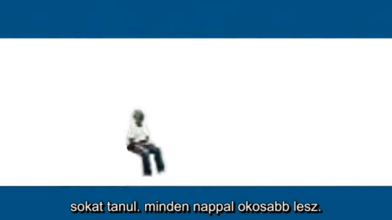

(srt,
sub)
Linuxos
Beágyazott Fejlesztési Környezet
hackerschool
- https://sourceforge.net/u/hackerschool/profile/
Megjelenés,
képek, hangok:
-
-backgrounds
-
*-icons*
-
*-sounds
-
*-wallpapers*
További
összetevők:
*-data
*-nonfree
*-samples
Kulcsszavak
a programcsomagokat
összegyűjtő metacsomagok
megkeresésére:
-
-addons
-
-edu-
-
-extras
-
-games
-
-restricted-
-
forensics-
-
games-
-
junior-
-
multimedia-
-
science-
-
screenlets-pack-all
-
tweak
-
ubuntustudio-
-
xdg
Linux
alatt néha szükség lehet vagy egyszerűbb parancsok futtatása
terminálból.
root@csakalinuxjo:/home/csakalinuxjo#
apt-get
apt
1.0.10.2ubuntu1 erre: amd64 lefordítva ekkor: Apr 19 2016 13:38:46
Használat:
apt-get [kapcsolók] parancs
apt-get
[kapcsolók] install|remove pkg1 [pkg2 ...]
apt-get
[kapcsolók] source pkg1 [pkg2 ...]
Az
apt-get egy egyszerű parancssori felület csomagok letöltéséhez
és
telepítéséhez.
A leggyakrabban használt parancsok az update és az install.
Parancsok:
update
- Frissíti a csomaglistákat
upgrade
- Frissítés végrehajtása
install
- Új csomagok telepítése (csomag a libc6 és nem a libc6.deb)
remove
- Csomagok eltávolítása
autoremove
- Automatikusan eltávolítja a nem használt csomagokat
purge
- Eltávolítja és teljesen törli a csomagokat
source
- Forrásarchívumok letöltése
build-dep
- Forráscsomagok építési függőségét konfigurálja
dist-upgrade
- Disztribúciófrissítés, lásd apt-get(8)
dselect-upgrade
- Követi a dselect kijelöléseit
clean
- Törli a letöltött archívumfájlokat
autoclean
- Törli a régi letöltött archívumfájlokat
check
- Ellenőrzi, hogy nincsenek-e törött függőségek
changelog
- Adott csomag változási naplójának letöltése és megjelenítése
download
- Bináris csomag letöltése a jelenlegi mappába
Opciók:
-h
Ez a súgó szöveg.
-q
Naplózható kimenet - nincs folyamatjelző
-qq
Nincs kimenet, kivéve a hibákat
-d
Csak letöltés - NEM telepíti vagy bontja ki az archívokat
-s
Szimulációs mód.
-y
Felteszi, hogy minden kérdésre igen a válasz, és nem kérdez
-f
Próbálja folytatni, akkor is ha a sértetlenségi teszt hibát
jelez
-m
Próbálja folytatni, akkor is ha egyes archívumok nem találhatók
-u
Megjeleníti a frissített csomagok listáját is
-b
Megépíti a forráscsomagot miután letöltötte
-V
Részletes verziószámok
-c=?
Ezt a konfigurációs fájlt olvassa be
-o=?
Beállít egy tetszőleges konfigurációs opciót, pl. -o
dir::cache=/tmp
Lásd
még az apt-get(8), sources.list(5) és apt.conf(5) kézikönyvlapokat
további
információkért
és opciókért.
Ez
az APT a SzuperTehén Hatalmával rendelkezik.
root@csakalinuxjo:/home/csakalinuxjo#
Több
deb csomag telepítése egyszerre:
dpkg
-i *.deb
Telepített
csomagok listázása fájlba:
dpkg
–get-selections > mylist.txt
sudo
apt update && apt upgrade && apt install ntp mc gpm
synaptic menu menu-l10n menu-xdg extra-xdg-menus
classicmenu-indicator xfce4
sudo
apt install guake gftp doublecmd-common doublecmd-help-en
qbittorrent* *tweak-tool
sudo
apt install *-restricted-addons *-restricted-extras
ubuntu-benchmark-tools forensics-full ubuntustudio*
sudo
apt autoremove && apt clean && apt update &&
apt upgrade
Asztali
környezetek telepítése metacsomagokból:
-
-desktop-environment
-
edubuntu-desktop
-
kubuntu-desktop
-
kubuntu-full
-
lubuntu-desktop
-
ubuntu-desktop-next
-
ubuntu-gnome-desktop
-
ubuntu-mate-desktop
-
ubuntukylin-desktop
-
ubuntustudio-desktop
-
xubuntu-desktop
Egy
lépésben is telepíthetünk csomagokat (ha van elég hely a
merevlemezen).
sudo
apt-get install ntp mc gpm xdm elinks blackbox
menu menu-l10n menu-xdg extra-xdg-menus fspanel synaptic gdebi xorg
xserver-xorg xserver-xorg-video-all gftp openbox
lxde guake lubuntu-desktop
lubuntu-restricted-addons lubuntu-restricted-extras doublecmd-common
doublecmd-qt doublecmd-help-en appmenu-qt
alsa-tools alsa-tools-gui gnome-alsamixer
libreoffice
libreoffice-help-hu libreoffice-l10n-hu bluefish nautilus-dropbox
chromium-browser chromium-chromedriver pepperflashplugin-nonfree
audacity audacity-data gimp
gimp-data-extras gimp-gap gimp-help-common gimp-help-en
gimp-plugin-registry qbittorrent qbittorrent-nox xfce4 xfce4-goodies
ubuntu-restricted-addons ubuntu-restricted-extras xubuntu-desktop
xubuntu-restricted-addons xubuntu-restricted-extras
A
telepített programok listája a /usr/share/applications/
könyvtárban van.
Az
apt források mappája a /etc/apt/
helyen van.
Az
egyéni apt források mappálya a /etc/apt/sources.list.d/
helyen van.
Az
egyéni apt kulcsok mappálya a /etc/apt/trusted.gpg.d/
helyen van.
Az
apt kulcsok mappálya a /usr/share/keyrings/
helyen van.
Windows
pluginek linux böngészőkben
Android.html
Felhők:
dropbox
insync
mega
További
program és játékok :
base-passwd
Debian
base system master password and group files
Ezek
a kanonikus mesterpéldányait a felhasználói adatbázis
fájlokat
(/etc/passwd és /etc/group), amely tartalmazza a
Debian-felhasználók felhasználható és
csoportazonosítókat.
Az update-passwd eszköz áll rendelkezésre, hogy a rendszer
adatbázisok
szinkronizált ezekkel törzsadatok.
base-files
Ez
a csomag tartalmazza az alapvető fájlrendszer hierarchiájának egy
Debian rendszer, és
több fontos egyéb fájlok, mint például
a /etc/debian_version,
/etc/host.conf, /etc /issue, /etc/motd,
/etc/profile, és mások,
és a szöveg több közös engedélyek
használatát a Debian rendszerekben.
desktop-base
common
files for the Debian Desktop
Ez
a csomag tartalmazza a különböző egyéb fájlok által
használt
Debian Desktop telepítés. Jelenleg ez ad némi
Debian
kapcsolatos mű és témákat, .desktop fájlokat tartalmazó
linkek
Debian kapcsolódó anyag (alkalmas elhelyezése a
felhasználó asztali),
és más közös fájlok között a
rendelkezésre álló asztali környezetek
mint például a
GNOME és KDE.
lsb
Linux
Standard Base 4.1 support package
A
Linux Standard Base (http://www.linuxbase.org/
) egy szabványos
core rendszer, amely harmadik fél írt
alkalmazások Linux
attól függ.
Ez a csomag egy
megvalósítása az összes modul 4.1-es verziója
A Linux
Standard Base a Debian Intel x86, Intel ia64
(Itanium), az IBM
S390 és PowerPC 32 bites architektúra a Linux
kernel. Jövőbeli
felülvizsgálatai a specifikáció és ennek csomag
támogatja
az LSB további architektúrák és magok.
A célja ennek a
csomagot az, hogy egy a jelenlegi legjobb gyakorlatok módja
A
telepítéséhez és futtatásához LSB csomagok a Debian GNU /
Linux. a
jelenléte nem jelenti azt, hogy a Debian teljes
mértékben megfelel
A Linux Standard Base, és nem értelmezhető
úgy, mint
nyilatkozat arról, hogy a Debian LSB-kompatibilis.
lsb-base
Linux
Standard Base 4.1 init script functionality
A
Linux Standard Base (http://www.linuxbase.org/
) egy szabványos
core rendszer, amely harmadik fél írt
alkalmazások Linux
attól függ.
Ez a csomag az már csak
az init-funkciók shell könyvtár, amely
lehet használni más
csomagokat "inicializáló szkriptek konzol
fakitermelés
és egyéb célokra.
lsb-release
A
Linux Standard Base (http://www.linuxbase.org/
) egy szabványos
core rendszer, amely harmadik fél írt
alkalmazások Linux
attól függ.
Az LSB-release parancsot
egy egyszerű eszköz, amely segít azonosítani a Linux
forgalmazás
használják, és annak betartását a Linux Standard Base.
LSB
megfelelőség nem kell jelenteni, ha az előírt metapackages
is
telepítve.
Bár úgy általi használatra szánt LSB
csomagok, ez a parancs is
hasznos lehet programozottan
megkülönböztetése tiszta Debian
telepítés és az azokból
származó disztribúciók.
menu
generates
programs menu for all menu-aware applications
A
Debian menü tartja átlátható menük a különböző
ablak-vezetők
szinkronban a telepített programok listájában.
A Debian menü
támaszkodik listáját menübejegyzéseket által nyújtott
programok
és egy listát a menü-módszerek által nyújtott
ablak-vezetők és más
menü-re felkészített
alkalmazások.
Menü rendszerszintű és felhasználói szintű
konfiguráció és felülbírálja
mind menü bejegyzések és a
menü-módszereket.
ubuntu-release-upgrader-core
manage release upgrades
upgrade-system
command for upgrading and
sanitizing a Debian system
Frissítés-rendszer
kényelmes lehetőséget kínál arra, hogy a Debian rendszer
up-to-date,
Még mentes felhalmozott
cruft, mint elavult könyvtárak.
Ez különösen hasznos a
rendszerekben, amelyekben mix csomagokat a különböző
kibocsátások (stable /
testing / nem stabil) és az asztali rendszerek, ahol csomagok
gyakran telepíteni vagy
eltávolítani szerint változó felhasználói ízek.
Alapértelmezésben ez van
beállítva, hogy megtisztítja az összes csomagot, amely nem
szerepel
mint egy másik csomag
függősége. Kevésbé drasztikus beállítások is lehetségesek
szerkesztés
/etc/upgrade-system.conf(5).
http://pastebin.com/e9Cqzp9W